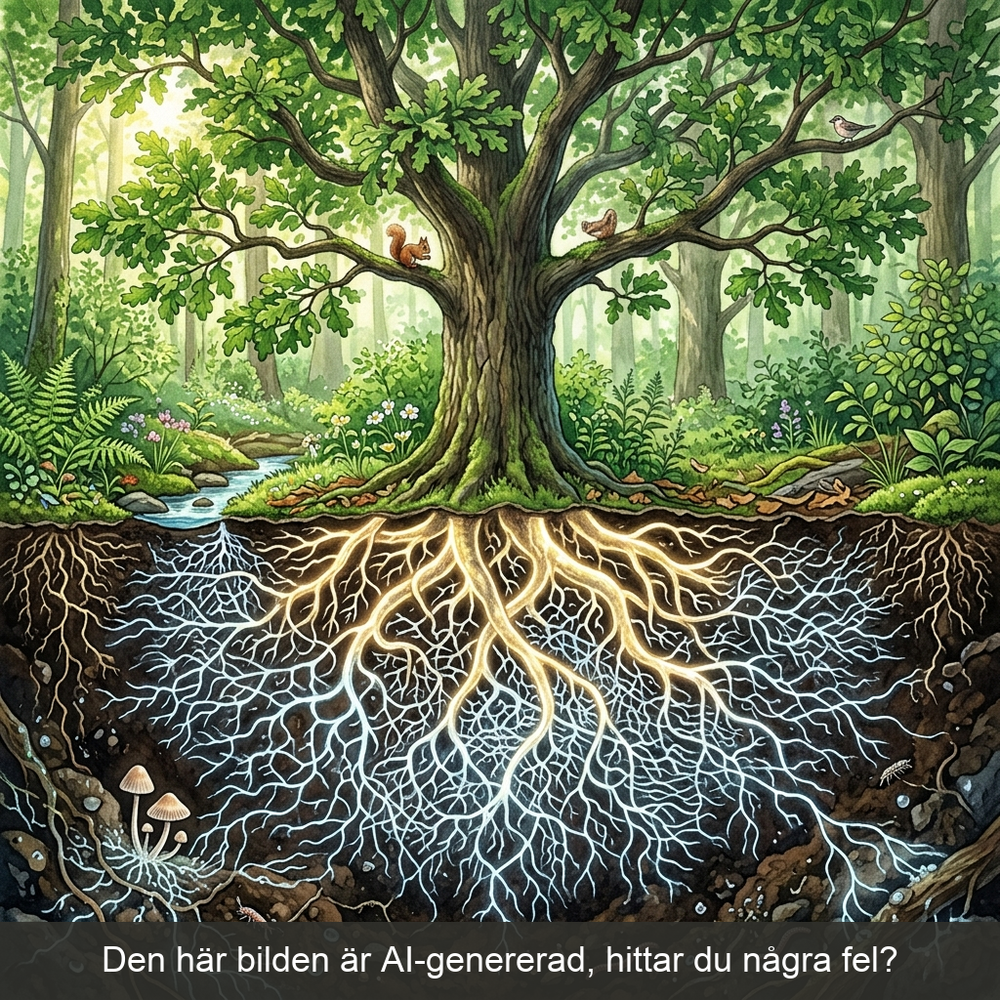
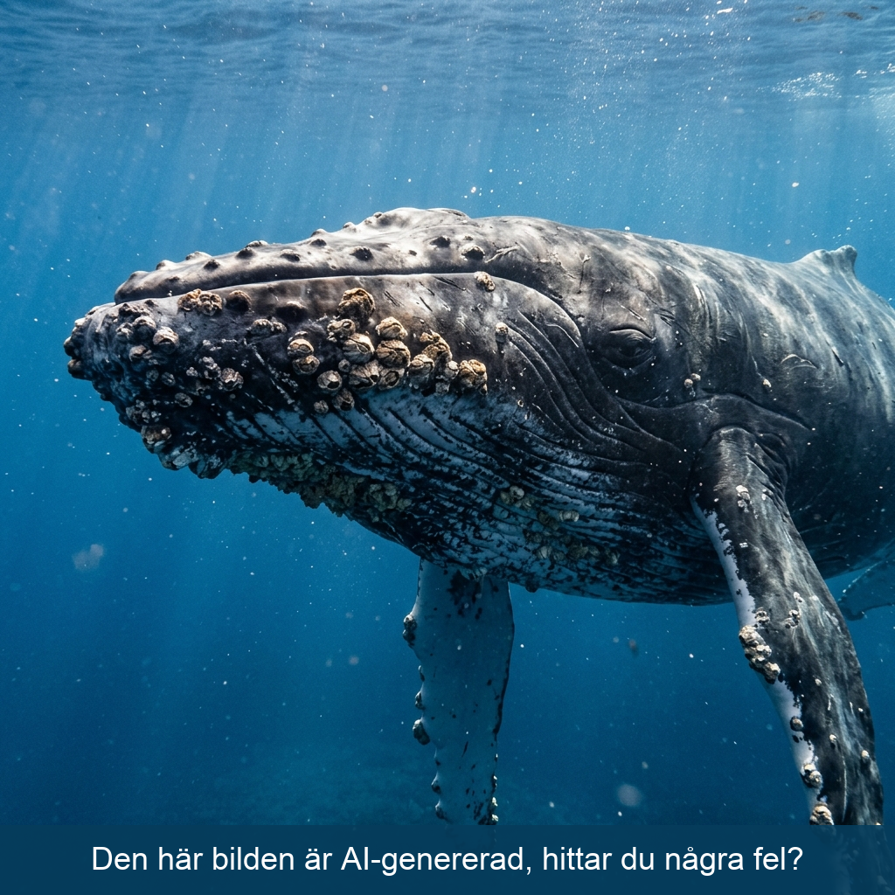
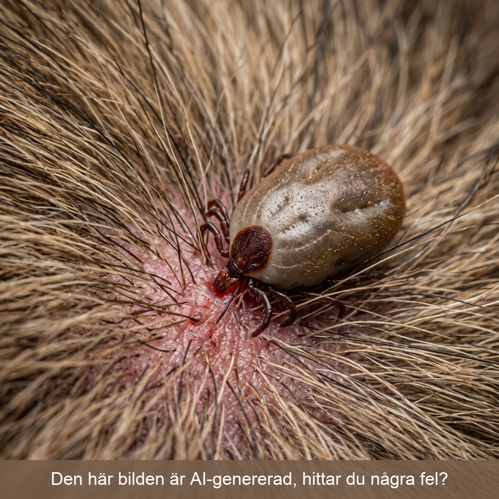

"I naturen kallas det täta samspelet mellan arter för Symbios. Det betyder bokstavligen 'sam-liv'."
(Byt till Slide 3 i Elev-Slidedecket: Mutualism)

"Det första är Mutualism. Båda vinner! Titta på mykorrhizan under marken här. Trädet och svampen samarbetar.
Källkritik-fråga: Den här bilden är AI-genererad för att visa principen. Men vad är det biologiska felet?"
⏸ Låt elever gissa felen. (Svar: Svamptrådarna lyser inte, och de är oftast mikroskopiskt tunna.)
(Byt till Slide 4: Kommensalism)

"Nummer två är Kommensalism. En drar nytta, den andra bryr sig inte. Som havstulpaner på en val. De får gratis skjuts!
Källkritik-fråga: Varför har AI:n gjort fel här? Varför sitter de utspridda?"
⏸ Låt elever gissa. (Svar: I verkligheten sätter de sig i klungor längst fram på hakan/fenorna för att fånga plankton i vattenströmmen.)
(Byt till Slide 5: Parasitism)

"Sista är Parasitism. Tjuven! En vinner, en förlorar energi.
Källkritik-fråga: Fästingar är spindeldjur. Vad är misstänkt med AI-bilden?"
⏸ Låt elever gissa. (Svar: Svårt att se exakt 8 ben, och hullingarna (mundelarna) är inte nerborrade i huden som de ska vara.)